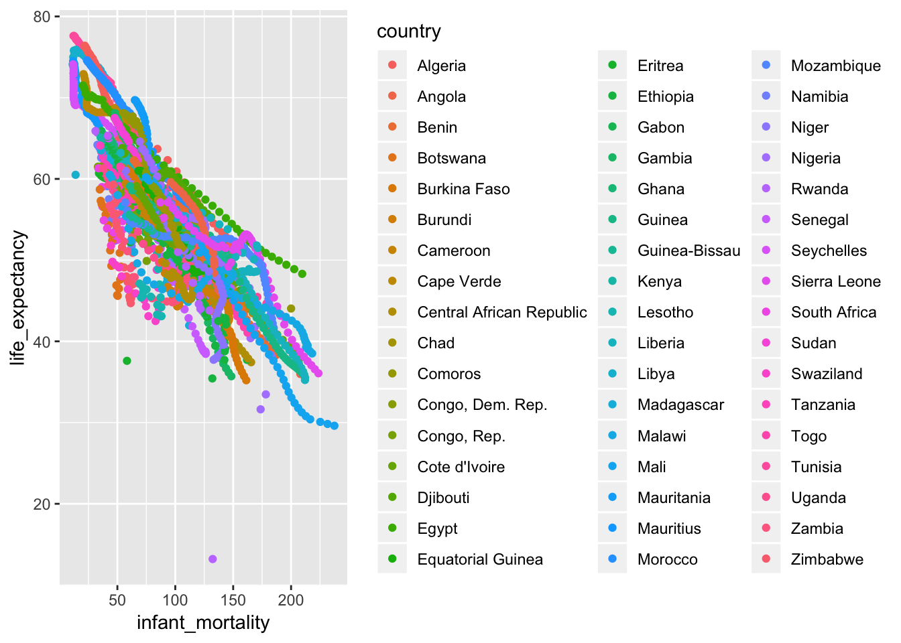
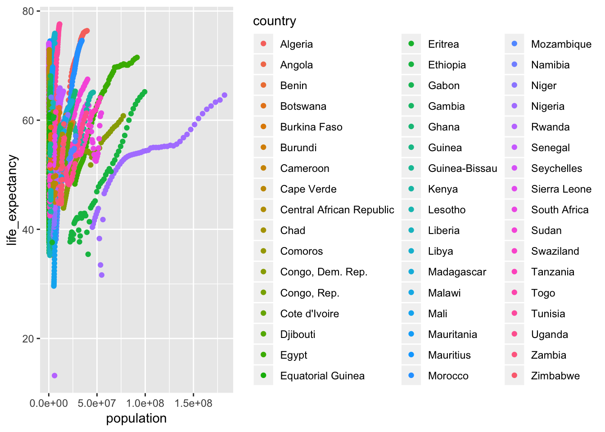
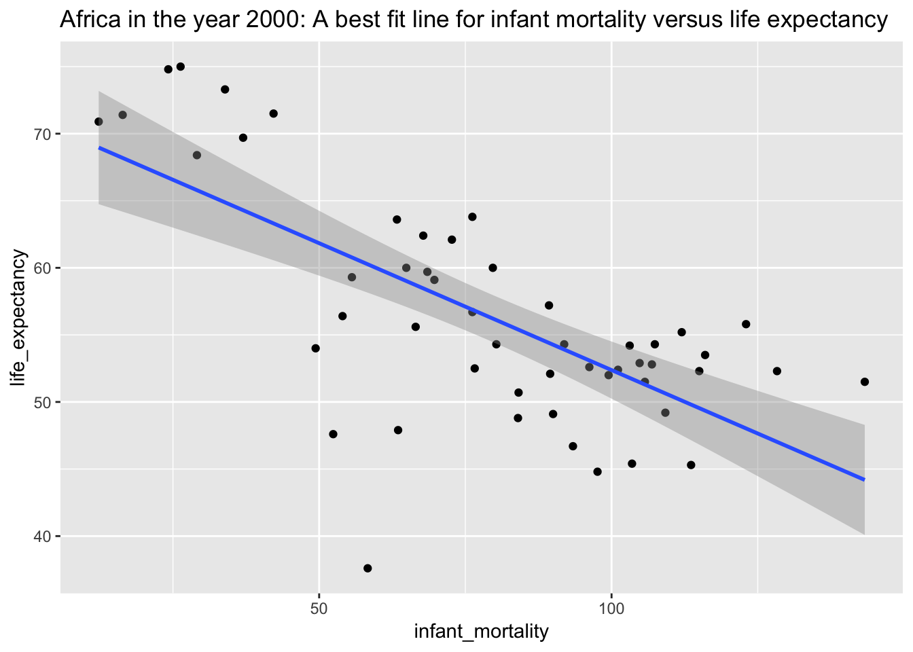
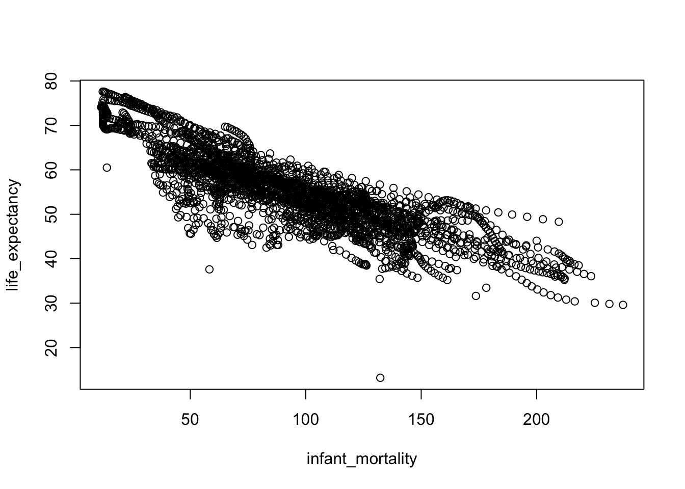
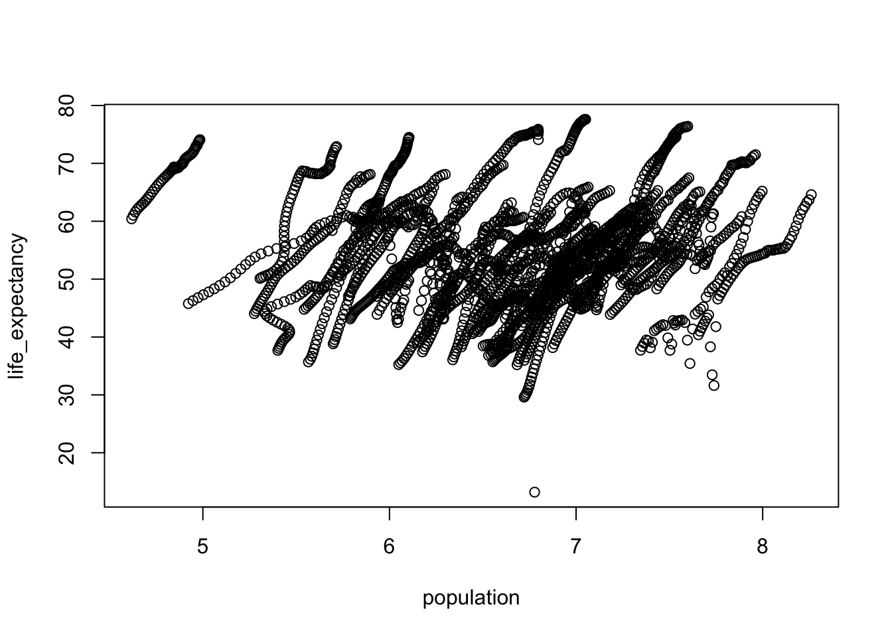
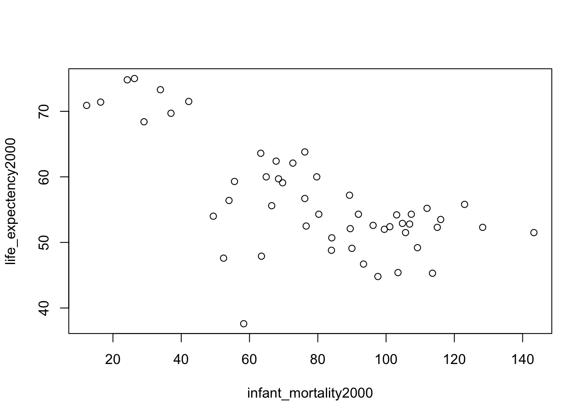
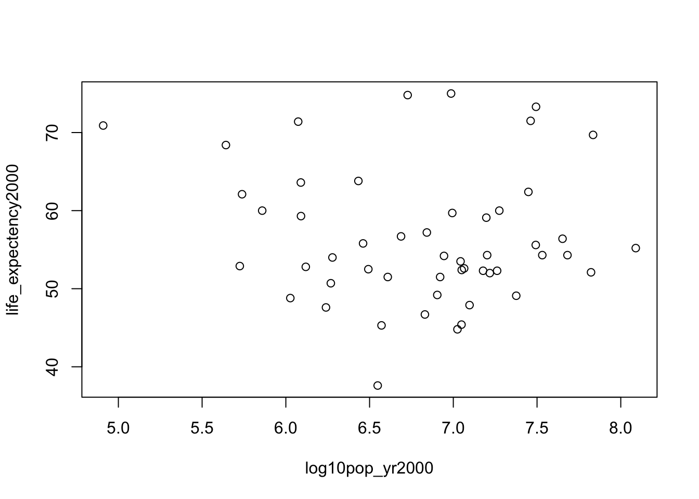
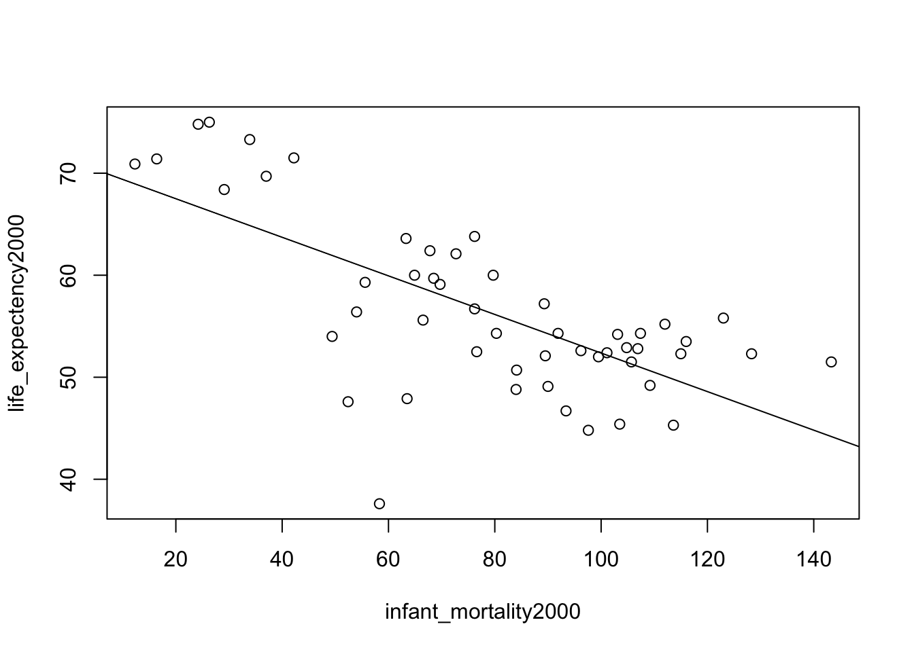
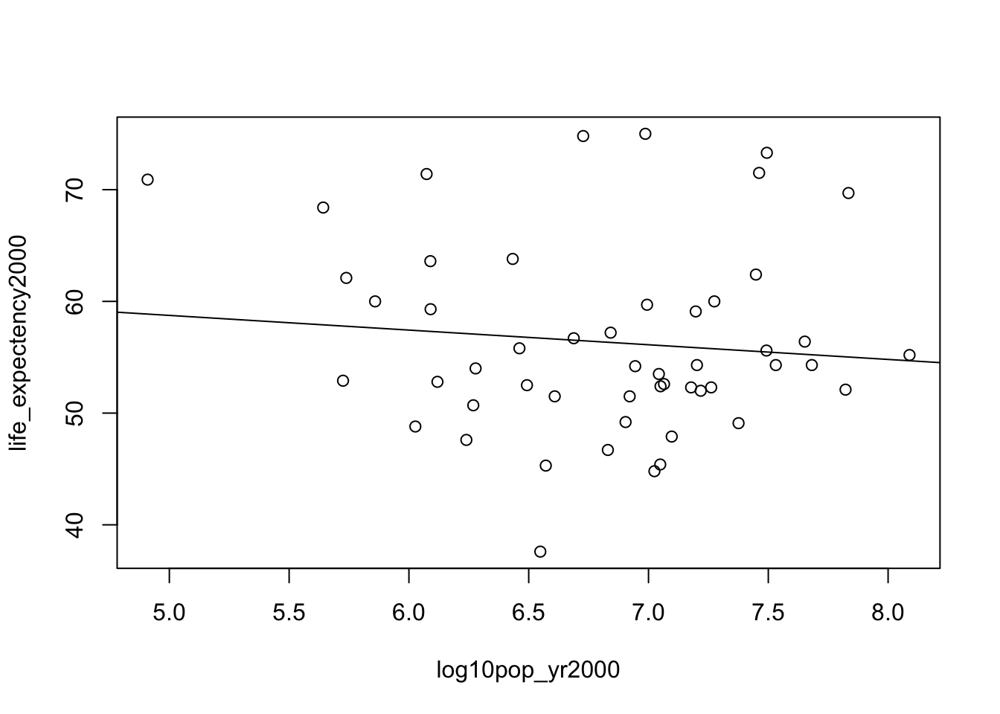

library(dslabs)## Warning: package 'dslabs' was built under R version 3.5.2library(tidyverse)## ── Attaching packages ─────── tidyverse 1.2.1 ──## ✔ ggplot2 3.1.1 ✔ purrr 0.3.2
## ✔ tibble 2.1.1 ✔ dplyr 0.8.0.1
## ✔ tidyr 0.8.3 ✔ stringr 1.4.0
## ✔ readr 1.3.1 ✔ forcats 0.4.0## Warning: package 'ggplot2' was built under R version 3.5.2## Warning: package 'tibble' was built under R version 3.5.2## Warning: package 'tidyr' was built under R version 3.5.2## Warning: package 'purrr' was built under R version 3.5.2## Warning: package 'dplyr' was built under R version 3.5.2## Warning: package 'stringr' was built under R version 3.5.2## Warning: package 'forcats' was built under R version 3.5.2## ── Conflicts ────────── tidyverse_conflicts() ──
## ✖ dplyr::filter() masks stats::filter()
## ✖ dplyr::lag() masks stats::lag()library(skimr)## Warning: package 'skimr' was built under R version 3.5.2##
## Attaching package: 'skimr'## The following object is masked from 'package:stats':
##
## filterdata("gapminder")help(gapminder)str(gapminder)## 'data.frame': 10545 obs. of 9 variables:
## $ country : Factor w/ 185 levels "Albania","Algeria",..: 1 2 3 4 5 6 7 8 9 10 ...
## $ year : int 1960 1960 1960 1960 1960 1960 1960 1960 1960 1960 ...
## $ infant_mortality: num 115.4 148.2 208 NA 59.9 ...
## $ life_expectancy : num 62.9 47.5 36 63 65.4 ...
## $ fertility : num 6.19 7.65 7.32 4.43 3.11 4.55 4.82 3.45 2.7 5.57 ...
## $ population : num 1636054 11124892 5270844 54681 20619075 ...
## $ gdp : num NA 1.38e+10 NA NA 1.08e+11 ...
## $ continent : Factor w/ 5 levels "Africa","Americas",..: 4 1 1 2 2 3 2 5 4 3 ...
## $ region : Factor w/ 22 levels "Australia and New Zealand",..: 19 11 10 2 15 21 2 1 22 21 ...summary(gapminder)## country year infant_mortality
## Albania : 57 Min. :1960 Min. : 1.50
## Algeria : 57 1st Qu.:1974 1st Qu.: 16.00
## Angola : 57 Median :1988 Median : 41.50
## Antigua and Barbuda: 57 Mean :1988 Mean : 55.31
## Argentina : 57 3rd Qu.:2002 3rd Qu.: 85.10
## Armenia : 57 Max. :2016 Max. :276.90
## (Other) :10203 NA's :1453
## life_expectancy fertility population gdp
## Min. :13.20 Min. :0.840 Min. :3.124e+04 Min. :4.040e+07
## 1st Qu.:57.50 1st Qu.:2.200 1st Qu.:1.333e+06 1st Qu.:1.846e+09
## Median :67.54 Median :3.750 Median :5.009e+06 Median :7.794e+09
## Mean :64.81 Mean :4.084 Mean :2.701e+07 Mean :1.480e+11
## 3rd Qu.:73.00 3rd Qu.:6.000 3rd Qu.:1.523e+07 3rd Qu.:5.540e+10
## Max. :83.90 Max. :9.220 Max. :1.376e+09 Max. :1.174e+13
## NA's :187 NA's :185 NA's :2972
## continent region
## Africa :2907 Western Asia :1026
## Americas:2052 Eastern Africa : 912
## Asia :2679 Western Africa : 912
## Europe :2223 Caribbean : 741
## Oceania : 684 South America : 684
## Southern Europe: 684
## (Other) :5586glimpse(gapminder)## Observations: 10,545
## Variables: 9
## $ country <fct> Albania, Algeria, Angola, Antigua and Barbuda, …
## $ year <int> 1960, 1960, 1960, 1960, 1960, 1960, 1960, 1960,…
## $ infant_mortality <dbl> 115.40, 148.20, 208.00, NA, 59.87, NA, NA, 20.3…
## $ life_expectancy <dbl> 62.87, 47.50, 35.98, 62.97, 65.39, 66.86, 65.66…
## $ fertility <dbl> 6.19, 7.65, 7.32, 4.43, 3.11, 4.55, 4.82, 3.45,…
## $ population <dbl> 1636054, 11124892, 5270844, 54681, 20619075, 18…
## $ gdp <dbl> NA, 13828152297, NA, NA, 108322326649, NA, NA, …
## $ continent <fct> Europe, Africa, Africa, Americas, Americas, Asi…
## $ region <fct> Southern Europe, Northern Africa, Middle Africa…skim(gapminder)class(gapminder)## [1] "data.frame"
#PROCESSING DATA
#Here the workflow diverges into a Tidyverse Exercise and a base R exercise. Tidyverse exercises are shown first
#Tidyverse code and plotting
#For tidyverse package use, we start a pipeline for gapminder data with %>% (“then”)
#We then filter () the data for only those data whose country is Africa
#then select() only the variables infant_mortality, life_expectancy, population, and country to remain
#plotting with country by color reveals many African countries. We also see that 226 rows are omitted from the plot due to missing values
#We see the same negative correlation between infant mortality and life expectancy here as we do below with base R code
gapminder %>%
filter(continent == "Africa") %>%
select(infant_mortality, life_expectancy, population, country) %>%
ggplot() + geom_point(aes(infant_mortality, life_expectancy, col= country))## Warning: Removed 226 rows containing missing values (geom_point).
gapminder %>%
filter(continent == "Africa") %>%
select(infant_mortality, life_expectancy, population, country) %>%
ggplot() + geom_point(aes(population, life_expectancy, col= country))## Warning: Removed 51 rows containing missing values (geom_point).
gapminder %>%
filter(continent == "Africa", year == 2000) %>%
select(infant_mortality, life_expectancy, population, country) %>%
ggplot(aes(infant_mortality, life_expectancy)) + geom_point() +geom_smooth(method = "lm") + labs(title= "Africa in the year 2000: A best fit line for infant mortality versus life expectancy")
#Base R code with original plots from coding exercise 1
africadata <- gapminder$continent == "Africa"str(africadata)## logi [1:10545] FALSE TRUE TRUE FALSE FALSE FALSE ...summary(africadata)## Mode FALSE TRUE
## logical 7638 2907infant_mortality_africa <- gapminder$infant_mortality[africadata]life_expectency_africa <- gapminder$life_expectancy[africadata]Infant_LifeExpec_Africa <- data.frame(infant_mortality = infant_mortality_africa, life_expectancy = life_expectency_africa)Population_africa <- gapminder$population[africadata]
life_expectency_africa <- gapminder$life_expectancy[africadata]Pop_LifeExp_Africa <- data.frame(population = Population_africa, life_expectency = life_expectency_africa)str(Pop_LifeExp_Africa)## 'data.frame': 2907 obs. of 2 variables:
## $ population : num 11124892 5270844 2431620 524029 4829291 ...
## $ life_expectency: num 47.5 36 38.3 50.3 35.2 ...str(Infant_LifeExpec_Africa)## 'data.frame': 2907 obs. of 2 variables:
## $ infant_mortality: num 148 208 187 116 161 ...
## $ life_expectancy : num 47.5 36 38.3 50.3 35.2 ...summary(Pop_LifeExp_Africa)## population life_expectency
## Min. : 41538 Min. :13.20
## 1st Qu.: 1605232 1st Qu.:48.23
## Median : 5570982 Median :53.98
## Mean : 12235961 Mean :54.38
## 3rd Qu.: 13888152 3rd Qu.:60.10
## Max. :182201962 Max. :77.60
## NA's :51summary(Infant_LifeExpec_Africa)## infant_mortality life_expectancy
## Min. : 11.40 Min. :13.20
## 1st Qu.: 62.20 1st Qu.:48.23
## Median : 93.40 Median :53.98
## Mean : 95.12 Mean :54.38
## 3rd Qu.:124.70 3rd Qu.:60.10
## Max. :237.40 Max. :77.60
## NA's :226plot(Infant_LifeExpec_Africa) #the plot indicates a negative correlation between the two variables ##Countires with increased infant mortality show a decrease in life expectancy
logten_pop_africa <- log10(Population_africa)log10_pop_life_expec_africa <- data.frame(population = logten_pop_africa, life_expectancy = life_expectency_africa)plot(log10_pop_life_expec_africa) #this plot shows streaks of data that appear to go together. By looking at this streaks i believe that they show the different countries in africa. They also seem to move in a positive trend.
na_index <- is.na(infant_mortality_africa)gapminder$year[na_index]## [1] 1960 1960 1960 1960 1960 1960 1960 1960 1960 1960 1960 1960 1960 1960
## [15] 1960 1960 1960 1960 1960 1960 1960 1960 1960 1960 1960 1960 1960 1960
## [29] 1960 1960 1960 1960 1960 1960 1960 1960 1960 1960 1960 1960 1960 1960
## [43] 1960 1960 1960 1960 1960 1960 1960 1960 1960 1960 1960 1960 1960 1961
## [57] 1961 1961 1961 1961 1961 1961 1961 1961 1961 1961 1961 1961 1961 1961
## [71] 1961 1961 1961 1961 1961 1961 1961 1961 1961 1961 1961 1961 1961 1961
## [85] 1961 1961 1961 1961 1961 1961 1961 1961 1961 1961 1961 1961 1961 1961
## [99] 1961 1961 1961 1961 1961 1961 1961 1961 1962 1962 1962 1962 1962 1962
## [113] 1962 1962 1962 1962 1962 1962 1962 1962 1962 1962 1962 1962 1962 1962
## [127] 1962 1962 1962 1962 1962 1962 1962 1962 1962 1963 1963 1963 1963 1963
## [141] 1963 1963 1963 1963 1963 1963 1963 1963 1963 1963 1963 1963 1963 1963
## [155] 1963 1963 1963 1963 1964 1964 1964 1964 1964 1964 1964 1964 1964 1964
## [169] 1964 1964 1965 1965 1965 1965 1965 1975 1975 1975 1975 1975 1975 1975
## [183] 1975 1975 1975 1975 1975 1975 1975 1975 1975 1975 1975 1975 1975 1975
## [197] 1975 1975 1975 1975 1975 1975 1975 1975 1975 1975 1975 1975 1975 1975
## [211] 1975 1975 1975 1975 1975 1975 1975 1975 1975 1975 1975 1975 1975 1975
## [225] 1975 1975 1975 1975 1975 1975 1975 1975 1975 1975 1975 1975 1975 1976
## [239] 1976 1976 1976 1976 1976 1976 1976 1976 1976 1976 1976 1976 1976 1976
## [253] 1976 1976 1976 1976 1976 1976 1976 1976 1976 1976 1976 1976 1976 1976
## [267] 1976 1976 1976 1976 1976 1976 1976 1976 1976 1976 1976 1976 1976 1976
## [281] 1976 1976 1976 1976 1976 1976 1976 1976 1976 1976 1976 1976 1976 1976
## [295] 1976 1976 1976 1977 1977 1977 1977 1977 1977 1977 1977 1977 1977 1977
## [309] 1977 1977 1977 1977 1977 1977 1977 1977 1977 1977 1977 1977 1977 1977
## [323] 1977 1977 1977 1977 1977 1977 1977 1977 1977 1977 1977 1977 1977 1977
## [337] 1977 1977 1977 1977 1977 1977 1977 1977 1978 1978 1978 1978 1978 1978
## [351] 1978 1978 1978 1978 1978 1978 1978 1978 1978 1978 1978 1978 1978 1978
## [365] 1978 1978 1978 1979 1979 1979 1979 1979 1979 1979 1979 1979 1979 1979
## [379] 1979 1979 1979 1979 1979 1979 1979 1979 1979 1979 1979 1980 1980 1980
## [393] 1980 1980 1980 1980 1980 1980 1981 1981 1981 1991 1991 1991 1991 1991
## [407] 1991 1991 1991 1991 1991 1991 1991 1991 1991 1991 1991 1991 1991 1991
## [421] 1991 1991 1991 1991 1991 1991 1991 1991 1991 1991 1991 1991 1991 1991
## [435] 1991 1991 1991 1991 1991 1991 1991 1991 1991 1991 1991 1991 1991 1991
## [449] 1991 1991 1991 1991 1991 1991 1991 1991 1991 1991 1991 1991 1991 1991
## [463] 1991 1991 1991 1991 1991 1991 1991 1991 1991 1991 1991 1991 1991 1991
## [477] 1991 1991 1991 1991 1992 1992 1992 1992 1992 1992 1992 1992 1992 1992
## [491] 1992 1992 1992 1992 1992 1992 1992 1992 1992 1992 1992 1992 1992 1992
## [505] 1992 1992 1992 1992 1992 1992 1992 1992 1992 1992 1992 1992 1992 1992
## [519] 1992 1992 1992 1992 1992 1992 1992 1992 1992 1992 1992 1992 1992 1992
## [533] 1992 1992 1992 1992 1992 1992 1993 1993 1993 1993 1993 1993 1993 1993
## [547] 1993 1993 1993 1993 1993 1993 1993 1993 1993 1993 1993 1993 1993 1993
## [561] 1993 1993 1993 1993 1993 1993 1993 1993 1993 1993 1993 1993 1993 1993
## [575] 1993 1993 1993 1993 1993 1994 1994 1994 1994 1994 1994 1994 1994 1994
## [589] 1994 1994 1994 1994 1994 1994 1994 1994 1994 1994 1994 1995 1995 1995
## [603] 1995 1995 1995 1995 1995 1995 1995 1995 1995 1995 1995 1995 1995 1995
## [617] 1995 1995 1996 1996 1996 1996 1996 1996 1996 1997 1997 2006 2006 2006
## [631] 2006 2006 2006 2006 2006 2006 2006 2006 2006 2006 2006 2006 2006 2006
## [645] 2006 2006 2006 2006 2006 2006 2006 2006 2007 2007 2007 2007 2007 2007
## [659] 2007 2007 2007 2007 2007 2007 2007 2007 2007 2007 2007 2007 2007 2007
## [673] 2007 2007 2007 2007 2007 2007 2007 2007 2007 2007 2007 2007 2007 2007
## [687] 2007 2007 2007 2007 2007 2007 2007 2007 2007 2007 2007 2007 2007 2007
## [701] 2007 2007 2007 2007 2007 2007 2007 2007 2007 2007 2007 2007 2007 2007
## [715] 2007 2007 2007 2007 2007 2007 2007 2007 2008 2008 2008 2008 2008 2008
## [729] 2008 2008 2008 2008 2008 2008 2008 2008 2008 2008 2008 2008 2008 2008
## [743] 2008 2008 2008 2008 2008 2008 2008 2008 2008 2008 2008 2008 2008 2008
## [757] 2008 2008 2008 2008 2008 2008 2008 2008 2008 2008 2008 2008 2008 2008
## [771] 2008 2008 2008 2008 2008 2008 2008 2008 2009 2009 2009 2009 2009 2009
## [785] 2009 2009 2009 2009 2009 2009 2009 2009 2009 2009 2009 2009 2009 2009
## [799] 2009 2009 2009 2009 2009 2009 2009 2009 2009 2009 2009 2009 2010 2010
## [813] 2010 2010 2010 2010 2010 2010 2010 2010 2010 2010 2010 2010 2010 2010
## [827] 2010 2010 2010 2010 2010 2011 2011 2011 2011 2011 2011 2011 2011 2011
## [841] 2011 2011 2011 2011 2011 2011 2011 2012 2012 2012 2012 2012 2013sum(na_index)## [1] 226 yr2000 <- gapminder$year == 2000africa2000 <- yr2000 & africadatayear2000 <- gapminder$year[africa2000]
region2000 <- gapminder$region[africa2000]
country2000 <- gapminder$country[africa2000]
infant_mortality2000 <- gapminder$infant_mortality[africa2000]
life_expectency2000 <- gapminder$life_expectancy[africa2000]
fertility2000 <- gapminder$fertility[africa2000]
gdp2000 <- gapminder$gdp[africa2000]
continent2000 <- gapminder$continent[africa2000]
population2000 <- gapminder$population[africa2000]africa2000_df <- data.frame(year = year2000, region = region2000, country = country2000, infant_mortality = infant_mortality2000, life_expectency = life_expectency2000, fertility = fertility2000, gdp = gdp2000, continent= continent2000, population = population2000)str(africa2000_df)## 'data.frame': 51 obs. of 9 variables:
## $ year : int 2000 2000 2000 2000 2000 2000 2000 2000 2000 2000 ...
## $ region : Factor w/ 22 levels "Australia and New Zealand",..: 11 10 20 17 20 5 10 20 10 10 ...
## $ country : Factor w/ 185 levels "Albania","Algeria",..: 2 3 18 22 26 27 29 31 32 33 ...
## $ infant_mortality: num 33.9 128.3 89.3 52.4 96.2 ...
## $ life_expectency : num 73.3 52.3 57.2 47.6 52.6 46.7 54.3 68.4 45.3 51.5 ...
## $ fertility : num 2.51 6.84 5.98 3.41 6.59 7.06 5.62 3.7 5.45 7.35 ...
## $ gdp : num 5.48e+10 9.13e+09 2.25e+09 5.63e+09 2.61e+09 ...
## $ continent : Factor w/ 5 levels "Africa","Americas",..: 1 1 1 1 1 1 1 1 1 1 ...
## $ population : num 31183658 15058638 6949366 1736579 11607944 ...summary(africa2000_df)## year region country
## Min. :2000 Eastern Africa :16 Algeria : 1
## 1st Qu.:2000 Western Africa :16 Angola : 1
## Median :2000 Middle Africa : 8 Benin : 1
## Mean :2000 Northern Africa : 6 Botswana : 1
## 3rd Qu.:2000 Southern Africa : 5 Burkina Faso: 1
## Max. :2000 Australia and New Zealand: 0 Burundi : 1
## (Other) : 0 (Other) :45
## infant_mortality life_expectency fertility gdp
## Min. : 12.30 Min. :37.60 Min. :1.990 Min. :2.019e+08
## 1st Qu.: 60.80 1st Qu.:51.75 1st Qu.:4.150 1st Qu.:1.274e+09
## Median : 80.30 Median :54.30 Median :5.550 Median :3.238e+09
## Mean : 78.93 Mean :56.36 Mean :5.156 Mean :1.155e+10
## 3rd Qu.:103.30 3rd Qu.:60.00 3rd Qu.:5.960 3rd Qu.:8.654e+09
## Max. :143.30 Max. :75.00 Max. :7.730 Max. :1.329e+11
##
## continent population
## Africa :51 Min. : 81154
## Americas: 0 1st Qu.: 2304687
## Asia : 0 Median : 8799165
## Europe : 0 Mean : 15659800
## Oceania : 0 3rd Qu.: 17391242
## Max. :122876723
## plot(infant_mortality2000, life_expectency2000) #we see a negative correlation
log10pop_yr2000 <- log10(population2000)plot(log10pop_yr2000, life_expectency2000) #no noticeable correlation
lm1 <- lm(life_expectency2000 ~ infant_mortality2000)
summary(lm1)##
## Call:
## lm(formula = life_expectency2000 ~ infant_mortality2000)
##
## Residuals:
## Min 1Q Median 3Q Max
## -22.6651 -3.7087 0.9914 4.0408 8.6817
##
## Coefficients:
## Estimate Std. Error t value Pr(>|t|)
## (Intercept) 71.29331 2.42611 29.386 < 2e-16 ***
## infant_mortality2000 -0.18916 0.02869 -6.594 2.83e-08 ***
## ---
## Signif. codes: 0 '***' 0.001 '**' 0.01 '*' 0.05 '.' 0.1 ' ' 1
##
## Residual standard error: 6.221 on 49 degrees of freedom
## Multiple R-squared: 0.4701, Adjusted R-squared: 0.4593
## F-statistic: 43.48 on 1 and 49 DF, p-value: 2.826e-08plot(infant_mortality2000, life_expectency2000)
abline(lm1) #this is nice because it resolidifies the conclusions i came to before
plot(log10pop_yr2000, life_expectency2000)
abline(lm2)